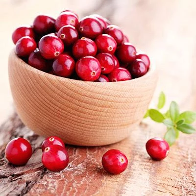

Jamba Juice Inspired
Horror-Themed Drinks
Here at our establishment we create any beverage the customer requests. Anything from smoothies to juices! All our creations are made with love but also fresh fruits that are delivered daily. When a custom drink is created, it is added to our custom menu. We suggest naming the beverages with quirky names because although we are a Horror-Themed establishment, we enjoy all the fun in creating delightful beverages!


Are you a fan of horror themed drinks? You're in for a fruity treat!